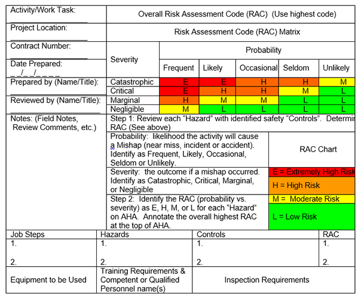

01.A General
01.A.15–01.A.17
01.A.15 USACE Risk Management Process. Risk management is a business process that includes the identification, assessment, and prioritization of risks, followed by coordinated and economical application of resources to minimize, monitor, and control the probability and/or impact of unfortunate events to an acceptable level. The USACE uses the Activity Hazard Analysis (AHA) as part of a total risk management process. > See Figure 1-2 for a NON-MANDATORY formatted outline of an AHA and an electronic version of this AHA may be found on the HQUSACE Safety Office Website. Work crews may use other forms/formats as long as the information contained within is the same.
- An AHA shall be prepared and documented for each USACE activity as warranted by the hazards associated with the activity. Typically, an AHA shall be prepared for all field, laboratory, industrial and maintenance activities.
- The supervisor, utilizing the recommendations of the SOHO, should determine the need for an AHA for each activity within his/her area of responsibility. AHAs shall define the steps being performed within the activity or task, identify the work sequences, specific anticipated hazards, site conditions, equipment, materials, personnel and the control measures to be implemented.
- Before beginning each work activity, the workers performing that work activity shall prepare the initial AHA. A Risk Assessment Code (RAC) is assigned to each step, to the risk that remains after controls have been applied (residual risk). In developing the AHA for a particular activity, the involved workers should draw upon the expertise (knowledge, skill and experience) of the USACE supervisor for that activity as well as the SOH Office.
- Once this process has occurred, a RAC will be assigned to the activity as a whole (cannot be lower than the highest step RAC).
- Acceptance of risk. This residual risk must then be communicated to the proper authority for acceptance in order to proceed with the activity.
- The names of the Competent Person(s) (CP) and Qualified Person(s) (QP) required for a particular activity (e.g., confined space entry, scaffolding, fall protection or other activities as specified by OSHA/this manual) shall be identified and included in the AHA, as well as proof of their competency/qualification.
- If more than one CP/QP is used on the AHA activity, a list of names and appropriate qualifications shall be noted on the AHA. Those listed must be CPs/QPs for the type of work involved in the AHA and familiar with current site safety issues.
- Work shall not begin until the AHA with RAC for the work activity has been discussed with all engaged in the activity in a job pre-brief (to include Supervisor and/or local SOHO if applicable).
FIGURE 1-2
ACTIVITY HAZARD ANALYSIS (AHA)

- AHA’s are intended to be developed and used by the field crews/workers performing the work, with the assistance of others (CDSO, Superintendent, etc.) as needed. The initial AHA shall be provided to and used by the field crews/workers that are performing that activity. AHAs are to be considered living documents and are intended to be created in the field and updated by the workers as needed.
- The AHA shall be reviewed and modified as necessary to address changing site conditions, operations, or change of CP(s)/QP(s).
- If a new CP/QP (not on the original list) is added, the list shall be updated (an administrative action not requiring an updated AHA). The new CP/QP shall acknowledge in writing that he/she has reviewed the AHA and is familiar with current site safety issues.
- If the initial RAC increases due to a change made to the AHA by the workers, the AHA shall be re-reviewed by the supervisor and local SOHO for acceptance prior to work proceeding.
- Changes to or updates to an AHA that do not increase the RAC are not required to be re-reviewed.
- Workers/crews shall have in their possession the current AHA that reflects current site conditions, personnel, equipment, control measures, etc while the work is being performed.
- The AHA shall be used to assure work is being performed consistent with the AHA. In the event that the work is not being performed/conducted in a safe manner, work shall stop until it is in compliance with this manual, and the AHA.
- Once the activity has been completed, the AHA shall be available and kept on file on site for 6 months minimum.
01.A.16 To ensure compliance with this manual, the Contractor may be required to prepare for review specific SOH submittal items. These submittal items may be specifically required by this manual or may be identified in the contract or by the Contracting Officer's Representative (COR). All SOH submittal items shall be written in English and provided by the Contractor to the GDA.
01.A.17 Contractor Site Safety and Health Officer (SSHO). The Contractor shall employ a minimum of one CP at each project site to function as the SSHO (primary), depending on job complexity, size and any other pertinent factors.
- The SSHO shall:
- Be a full-time responsibility. The SSHO shall be present at the project site, located so they have full mobility and reasonable access to all major work operations during the shift.
- Be an employee other than the supervisor, unless specified differently in the contract and coordinated with the local SOH Office, and
- Report to a senior project (or corporate) official.
- The SSHO, as a minimum, must produce a copy of their instructor-signed OSHA 30-hour training card (or course completion if within 90 days of having completed the training and card has not yet been issued). They will have completed:
- The 30-hour OSHA General Industry safety class (may be web-based training if the student is able to directly ask questions of the instructor by chat or phone) or
- The 30-hour OSHA Construction Industry safety class (may be web-based training if the student is able to directly ask questions of the instructor by chat/phone), or
- As an equivalent, formal construction or industry safety and health training covering the subjects of the OSHA 30-hour course and the EM 385-1-1 [see Appendix A, Paragraph 3.d.(3)] applicable to the work to be performed and given by qualified instructors - may be web-base training if the student is able to directly ask questions of the instructor by chat/phone).
▸Note: The local SOHO having jurisdiction over the work shall evaluate the proposed equivalent training for applicability to the contract work to be performed.
- In addition, the SSHO is also required to have proof of employment for:
- Five (5) years of continuous construction industry safety experience in supervising/managing general construction (managing safety programs or processes or conducting hazard analyses and developing controls), or
- Five (5) years of continuous general industry safety experience in supervising/managing general industry (managing safety programs or processes or conducting hazard analyses and developing controls), or
- If the SSHO has a Third-Party, Nationally Accredited (ANSI or National Commission for Certifying Agencies - NCCA) SOH-related certification, only 4 years of experience is needed. > See Appendix Q for list of certifications.
- SSHOs shall maintain competency through having taken 8 hours of documented formal, on-line, or self-study safety and health related coursework every year. Examples of continuing education activities that meet this requirement are: writing an article, teaching a class, reading/writing professional articles, attendance/participation in professional societies/meetings, etc.
- For projects with multiple shifts, an Alternate SSHO as identified in the AHA will be assigned to insure SSHO coverage for the project at all times work activities are conducted.
▸Note: The Alternate SSHO must meet the same requirements and assume the responsibilities of the project SSHO. > See Appendix Q for “Alternate SSHO” and “SSHO” definitions.
- If the SSHO is off-site for a period longer than 24 hours, an Alternate SSHO shall be provided and shall fulfill the same roles and responsibilities as the primary SSHO.
- When the SSHO is temporarily (up to 24 hours) off-site, a Designated Representative (DR), as identified in the AHA may be used in lieu of an Alternate SSHO, and shall be on the project site at all times when work is being performed.
▸Note: DRs are collateral duty safety personnel, with safety duties in addition to their full-time occupation.
- If an activity, task or DFOW contains multiple sites and has been assessed and given an activity RAC of low or medium, a DR shall be appointed for each site where remote work locations are more than 45 minutes travel time from the SSHO’s duty location.
- DRs shall perform safety program tasks as designated by the SSHO and report safety findings to the SSHO.
- A DR may NOT be assigned to projects that have a RAC level of high or extremely high.
- The Contractor’s project management team, with the assistance of the SSHO, is responsible for managing, communicating, implementing and enforcing compliance with the Contractor's APP and other accepted safety and health submittals.
▸Exception 1: For dredging contracts, the SSHO requirements established in the standardized contract clause for dredging project site safety personnel shall be used as it is included in the current UFGS for Governmental Safety Requirements.
▸Exception 2
: For limited service contracts, for example, mowing only, park attendants, rest room cleaning, etc., the KO and SOH Office may modify SSHO requirements and waive the more stringent elements of this Section. > See Appendix A, Paragraphs 2 and 3.i.
▸Exception 3: For field walk-over, surface soil sampling, or long term water sampling, in which there is no exposure to mechanical or explosive hazards, the SSHO may be collateral duty and shall have a minimum of 8 hours of training annually and specific knowledge of the potential hazards of the tasks being completed.
{kind=link}